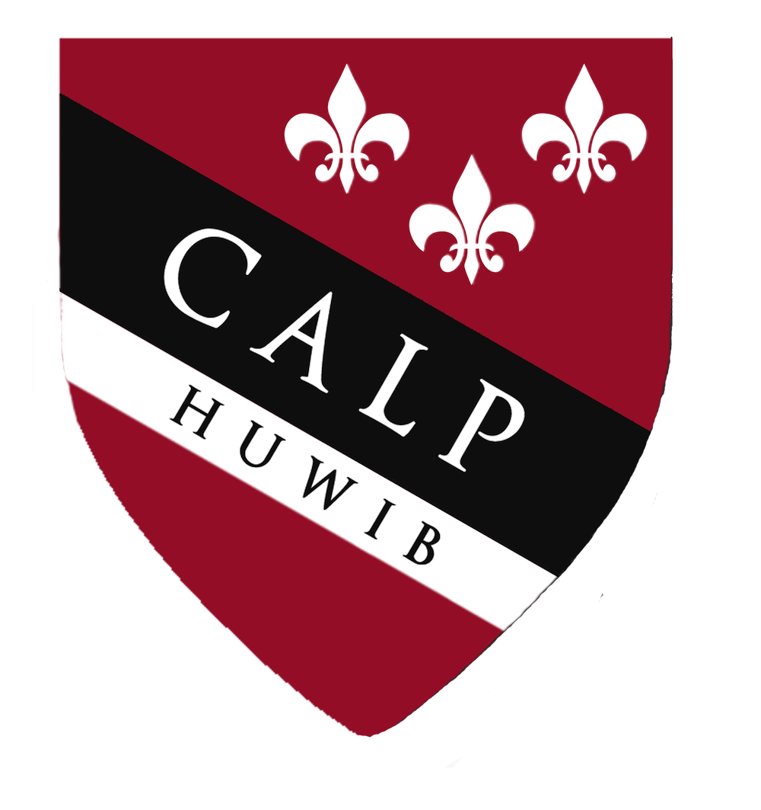
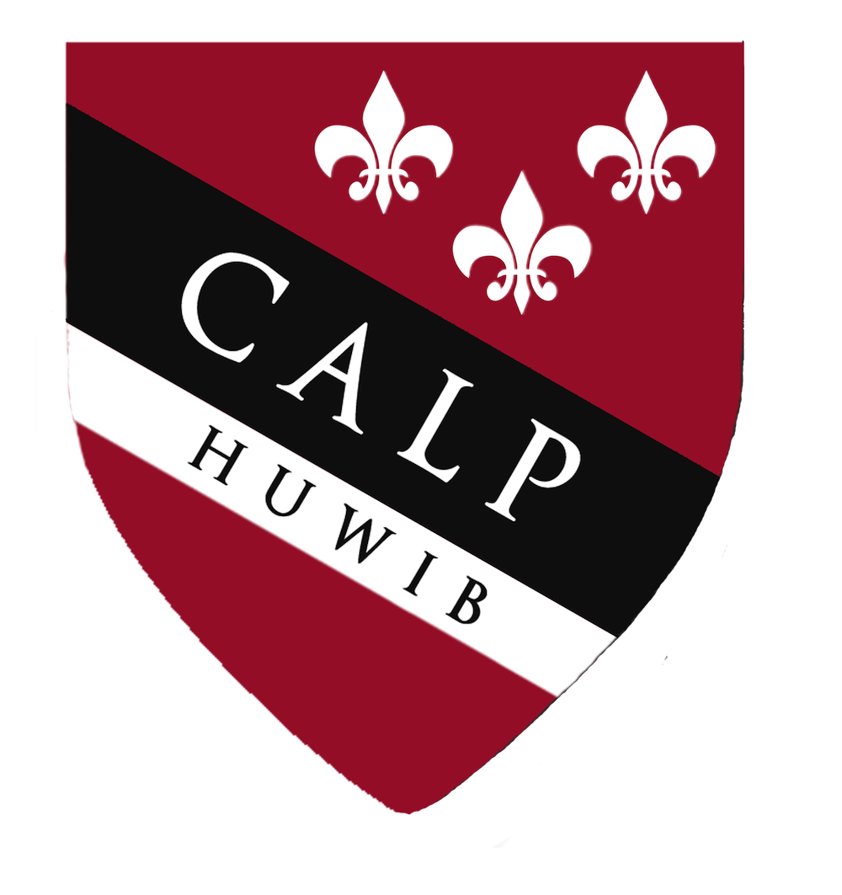
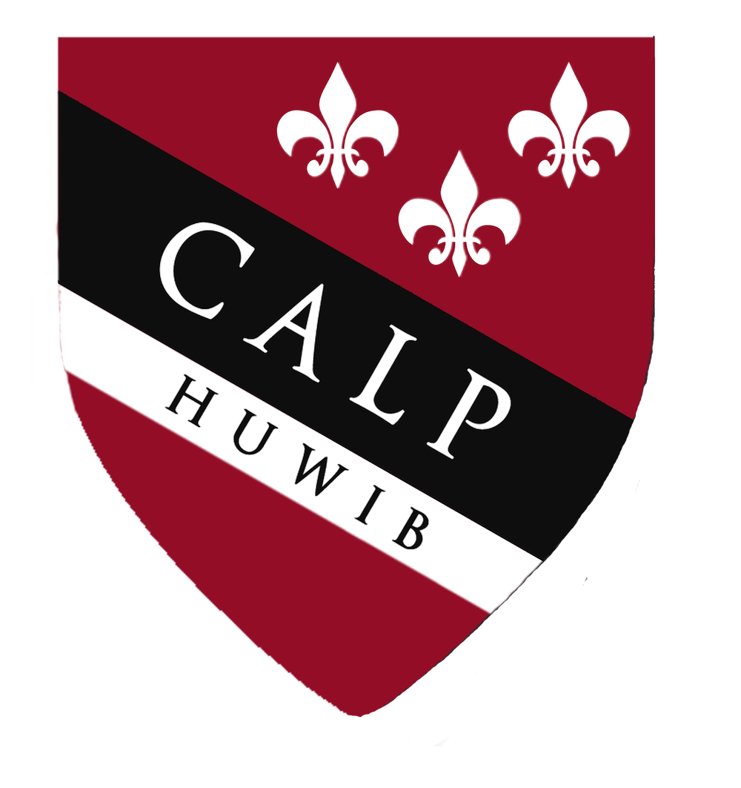
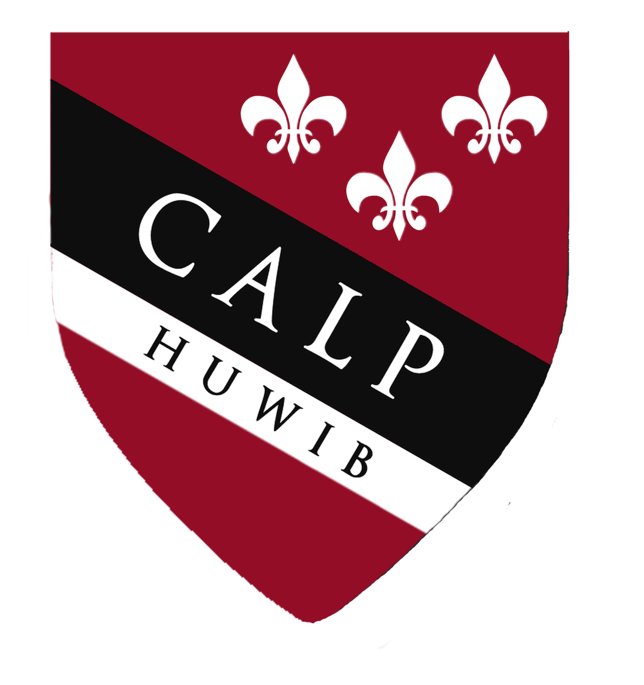

This year, we have revamped our Campus Ambassador program to allow for greater ownership and involvement from our Ambassadors. The revitalized, year-long Campus Ambassador Leadership Program encourages personal and professional leadership development for young women all over the world.
One of the primary responsibilities of our Campus Ambassadors is to recruit as many students as possible from their schools to attend IBC. Marketing the convention thoroughly is key to making the conference a success. Our Ambassadors develop creative campaigns that utilize social media, email, and word-of-mouth.
Another aspect of the program is the Blog. Campus Ambassadors write bimonthly posts ranging from business op-eds to event summaries. The most engaging and thoughtful posts are published in Harvard Undergraduate Women in Business' premiere Make it Happen Magazine.
Finally, Ambassadors are required to plan and execute at least two events - one during the year for the women at their schools to encourage leadership development and engage with business ideas, and another during WIB Weekend, which will be a collaboration with other Campus Ambassadors. These events aim to bolster the enthusiasm and excitement for IBC throughout the year. We also hope to engage young women internationally with issues currently being combated in the business world. Examples of campus events include company visits, panels and dinners with local business professionals and professors.


© HUWIB. Some rights reserved.